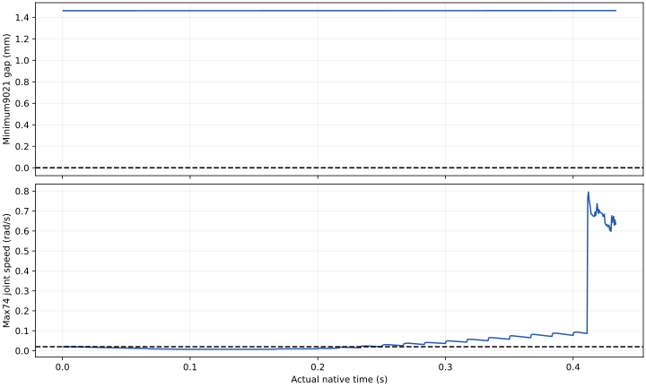

← 主面板全50电机随机动作诊断
SafeDuo 开发诊断 · 2026-10-13 · 2 FR3/F2 + 2 UR5/DFX。学习System0关闭，正式留出0。
短窗原物理或模型门槛未通过；长时间、大范围任意运动仍未验收。本轮加入24个独立手指电机的随机目标。全50个目标经过真实FIFO6，预测器读取全部74个实际关节坐标。原始来指令范围、执行目标范围与实际动作范围分别列出；保护性停机不能替代动作覆盖。
50独立随机输入电机
24 / 24普通随机执行中更新的手指目标
0.433秒实际原生记录时长
030/120/600秒物理长测完成
手指几何进入防护预测
旧预测器把手指固定在张开姿态，实际手指变化没有进入预测。新版本从全部74个实际关节坐标出发，用原始URDF手指运动学和原球对定义计算四臂及手指位置；不使用实测腕部位姿锚定，不拟合原生间隙偏置来通过精度审计。
在109/110/112/113的7920个已有原生子步上，逐项核对71446320条间隙，最大误差5.19微米；旧固定手指模型最大差异约95.5毫米。UR基座固定坐标约定错误也已修复，原始失败和回归记录保留。
这证明了已记录状态上的几何一致性；未来动力学跟踪、制动距离、完整碰撞网格与硬件安全尚未认证。防护中的短时线性预测仍是开发机制。
完整几何精度审计 · 只改变手指、旧预测完全不变的反例
实际执行与原门槛
115：832个实际子步，0.433秒，1920Hz物理、60Hz控制、FIFO6。同一初态、1条新开发IID50输入，种子202610130114；前4周期保持原公共前缀，后续每周期独立抽样。首次全50接入114在首个原生步后因任务观测器维度不匹配中断，归档完整控制周期0；该步没有可复核完整记录，明确不计安全试验。115仅修复两个臂目标观测表达式，原模型、质量、控制器、关节速度/限位、力与q/qd联动门槛保持一致。
原物理门槛：通过；原q且qd联动：未通过；四臂原实际运动门槛：未通过；真实完整抓取任务：未通过。最小9021代理间隙：1.461416毫米。
新IID指令通过FIFO送达16周期；其中普通随机执行16周期。本记录未触发制动。
COMMON_PREFIX：4控制周期；REQUEST：21控制周期；SCALED：1控制周期。记录中包含公共前缀与自然动态；全部位移不能直接归因于随机输入。原物理最小间隙门槛0，q与qd关系容差均10⁻⁴。

全50个电机：请求、执行、实际运动
请求均匀覆盖每个独立电机与被动联动关节共同允许的关节区间。该输入范围不代表可到达、安全或实际执行范围。普通随机执行区间指第10周期起、随机目标实际到达FIFO出口后，且尚未锁存制动的周期。
下载全部50维覆盖CSV。四臂实际运动继续采用各臂偏移≥0.1 rad且腕路径≥0.02 m的原门槛；本轮没有将微小手指变化算作充分大范围覆盖。
四视角原生视频
俯视、正视、侧视和全景使用已审计的原生相机帧。保留真实帧时间，没有合成动作。
慢放只改变观看速度。操作物体真实抬起并完成任务尚未通过；此处展示随机指令接入、实际小幅动作及安全干预。
距离完整验收的缺口
全50随机手指接入短窗的结果单独记账。30/120/600秒的连续输入60条已准备，但物理长测完成仍为0；连续原生记录需避免8192事件账本上限，且不能重置或拼接物理状态来代替长测。
下一阶段需要不同姿态与初速度下的制动距离、多运动过程的实际关节与工作空间覆盖、停机后的恢复执行，以及多种真实摩擦抓取完整任务。合格完整任务样本0，新增学习System0训练0，正式留出0，九项联合要求未验收。
上一轮制动、长时间随机输入准备与完整九项缺口 · 四臂实际退离动作和原始随机失败对照